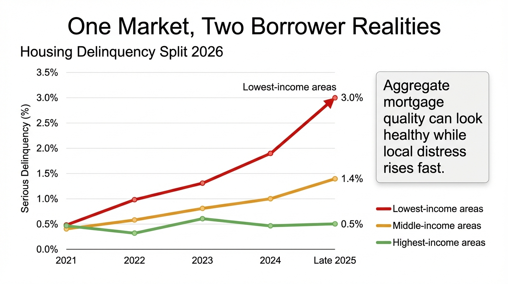

The 2026 Housing Stall: Rates, Inventory, and the New Delinquency Split
Housing improved at the margin in early 2026. That statement is true, but incomplete. Turnover is still weak relative to employment and wage growth, inventory is only slowly normalizing, and mortgage stress is rising fastest where household resilience is weakest.
The easiest way to misread housing in 2026 is to anchor on one month. Existing-home sales rose 1.7 percent in February to a 4.09 million annualized pace, and pending sales rose 1.8 percent. Those moves matter, especially because they followed a brief period of lower mortgage rates. Yet the broader system still looks like a stall, not a recovery. The National Association of Realtors itself said there is a long way to go to return to pre-pandemic transaction activity and that actual demand remains muted relative to wage growth and job gains.
Core thesis: 2026 housing is not defined by collapse or rebound. It is defined by slow turnover, incomplete supply repair, and a widening gap between households that can absorb high-rate frictions and households that cannot.

What The Surface Data Says
The surface story is mixed but not terrible. NAR reported February 2026 existing-home sales at 4.09 million annualized, with the median price at $398,000 and inventory at 1.29 million units. Pending home sales also moved up modestly. Affordability improved for the eighth consecutive month on NAR’s index. In the new-home market, the Census Bureau and HUD reported January 2026 sales at a 587,000 annualized rate, with 476,000 new houses for sale and a median sales price of $400,500.
Those figures mean buyers did respond when financing pressure eased. They do not mean the market cleared its deeper constraints. Existing inventory is still low by historical standards, while new-home inventory remains large enough to keep builders leaning on incentives. Housing demand improved, but from a subdued base. A bounce from weak is still weak.
Why The Fed Still Matters More Than The Bounce
On March 18, 2026, the Federal Reserve held the target range for the federal funds rate at 3.5 to 3.75 percent and said uncertainty about the economic outlook remained elevated, with specific reference to Middle East developments. That statement matters for housing because it keeps rate relief conditional. A brief mortgage-rate dip can improve transactions for a month. A durable housing recovery usually needs something more stable than a temporary window.
Markets understood this. The same macro environment that created a February affordability improvement also created reasons to doubt its persistence. If energy pressure, fiscal uncertainty, or risk premia push yields higher again, mortgage rates can reverse before supply is normalized. That is why a short-lived affordability gain should be read as an opportunity window, not as a solved problem.
The Underreported Split: Aggregate Quality Versus Local Distress
The New York Fed’s February 10, 2026 household debt release offered the cleanest picture of the balance-sheet split. Total household debt reached $18.8 trillion in the fourth quarter of 2025. Mortgage balances rose to $13.2 trillion. Aggregate mortgage performance still looked historically solid. But mortgage delinquencies continued to rise, and the deterioration was most pronounced in lower-income zip codes.
Liberty Street Economics put the point plainly: borrowers in the lowest-income areas saw new 90-plus-day mortgage delinquency rates rise from roughly 0.5 percent in 2021 to nearly 3.0 percent by late 2025, while higher-income areas remained much more insulated. This is the new housing split. National mortgage quality can look healthy because underwriting stayed tight and high-income borrowers retain large equity buffers. At the same time, weaker local labor markets and fragile household cash flow can produce visible distress beneath the aggregate average.

Why Inventory Rising Does Not End The Stall
Inventory is improving, but sluggishly. That phrase from NAR is more important than the headline gain. A market with slightly more listings can still be structurally jammed if sellers remain locked to old financing, buyers remain payment constrained, and builders concentrate supply in incentive-dependent segments. New houses for sale at 476,000 in January 2026 tell you builders still carry meaningful standing inventory. Existing homes at 1.29 million tell you resale supply remains tighter than the economy would normally imply.
This creates two pricing regimes. In some local markets, builders can use rate buydowns and concessions to move product even while the resale market stays frozen. In others, owners with cheap mortgages simply do not transact unless forced by life changes. That keeps national turnover weak even when a rate dip produces a temporary lift in demand.
Known, Inferred, And Still Uncertain
| Category | Assessment |
|---|---|
| Known | Existing-home sales improved in February, affordability improved, and inventory rose modestly. The Fed still held rates steady and said uncertainty remained elevated. |
| Known | Mortgage delinquencies are rising most quickly in lower-income zip codes, even while aggregate mortgage performance remains historically solid. |
| Inferred | The housing market remains highly sensitive to financing windows. Small rate changes can move activity without repairing the deeper turnover problem. |
| Unknown | Whether spring 2026 will extend the February improvement or whether macro uncertainty and higher yields will shut that window again. |
What This Means For Household Strategy
For households, the right question is not whether housing is “back.” The right question is which layer of the market you occupy. Owners with low fixed mortgage rates and strong liquidity are dealing with an option-value problem. They can wait, refinance behaviorally, or choose mobility only when the economics are compelling. Buyers with thinner buffers face a different market: payment sensitivity remains high, and a modest rate reversal can erase apparent affordability quickly.
This is why WealthMeter should treat housing as a balance-sheet system rather than a price chart. Price, rate, inventory, and delinquency data are all telling different parts of the same story. A housing market can look stable at the index level while becoming less forgiving for first-time buyers, lower-income owners, or households with weak cash reserves.
The practical implication is simple. Do not model a housing decision around one favorable month. Use a wider frame: payment durability at current rates, downside cash buffer, job mobility, and whether the property still improves total household optionality. The transaction market is functioning. It is not healthy enough to justify complacency.
Further Reading Inside The Site
This article extends the logic in The Mortgage Lock-In Trap and connects directly to The Retirement Age Lie and One Salary, Three Futures. For a broader household resilience frame, the relevant tool surfaces remain the Wealth Rank App and the 2026 Reports Hub.
Source List
Federal Reserve Board. Federal Reserve issues FOMC statement. Published March 18, 2026.
National Association of Realtors. Existing-home sales increased by 1.7 percent in February 2026. Accessed March 29, 2026.
National Association of Realtors. Pending Home Sales Report Shows 1.8 percent Increase in February. Published March 17, 2026.
U.S. Census Bureau and HUD. Monthly New Residential Sales, January 2026. Released March 19, 2026.
Federal Reserve Bank of New York. Household Debt Balances Grow Modestly; Early Delinquencies Level Out for Non-Housing Debts. Published February 10, 2026.
Liberty Street Economics. Where Are Mortgage Delinquencies Rising the Most? Published February 10, 2026.